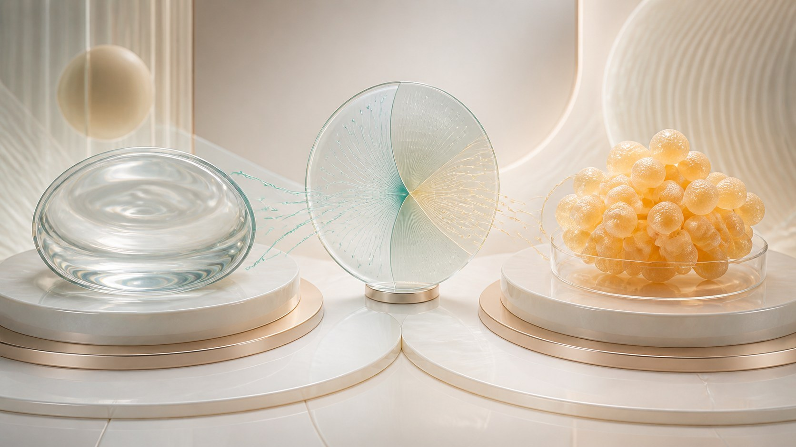
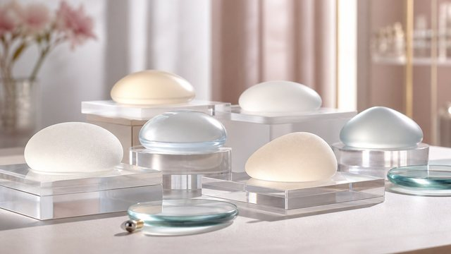

胸部整形 · 隆胸
两个方向都是正规医疗手术，面诊后再决定。

本专栏文章

隆胸是什么｜一次正规的医疗手术，先认识它再谈效果
这篇先帮你把隆胸这件事看清楚：它是需要挂号和麻醉的医疗手术，不是美容院里的保养项目；也讲清什么人适合、什么人不适合，以及为什么安全永远排在效果前面。
阅读全文

假体与自体脂肪｜隆胸的两种主流方式，先看懂区别
隆胸怎么做，主流就两种：假体置入和自体脂肪移植。这篇拆开讲它们的原理、手感、恢复、维持时间与各自风险，让你明白没有「越大越好」，只有「适不适合自己」。
阅读全文

隆胸流程与恢复｜从面诊到术后随访，一步心里有数
隆胸不是「躺进去就能走」的事。这篇按术前、手术、恢复、随访讲清楚整个过程，也把感染、包膜挛缩、不对称、假体问题这些可能遇到的并发症提前告诉你，让你知道恢复是个体差异很大的事。
阅读全文
如何选机构与医生｜把安全和信任放在第一位
隆胸做得好不好，第一步不是比价格，而是选对人。这篇教你看资质、看面诊沟通、识别夸大宣传，把选择标准从「哪家便宜」变成「哪家安全、靠谱」。
阅读全文
隆胸的切口与放置方式｜选哪个，答案在面诊里
从哪儿下刀、假体放进哪一层，决定了疤痕、恢复和最终的形态触感。这篇讲清它们各自的取舍，帮你带着问题去面诊，而不是自己拍板。
阅读全文

假体材质与品牌怎么选｜适合比「贵」更重要
假体分材质、表面（光面/毛面）和形状（圆形/水滴），品牌工艺也各有差异。这篇不讲哪款最好，而是教你从「你自己需要什么」出发去选，别让价格和广告替你做主。
阅读全文
隆胸术后护理与复查｜恢复期怎么过，心里有张时刻表
术后包扎、引流、换药、活动限制，到几周里逐渐消肿定型，都有讲究。这篇把恢复期该做什么、何时复查、饮食作息注意什么讲清楚，也提醒你：恢复个体差异大，一切以医嘱为准。
阅读全文
隆胸的常见顾虑与误区｜别被网上的说法带着走
会不会影响哺乳、体检怎么查、假体安不安全、会不会显假、老了会怎样……这些顾虑背后既有真问题，也藏着不少夸大和误解。这篇用常识和原则一一理清，既不夸大，也不淡化风险。
阅读全文
想要更进一步了解？
任何关于胸部美学、健康或手术的疑问，建议你到正规医疗机构，由执业医师面诊评估。健康与安全，永远优先。
回到顶部